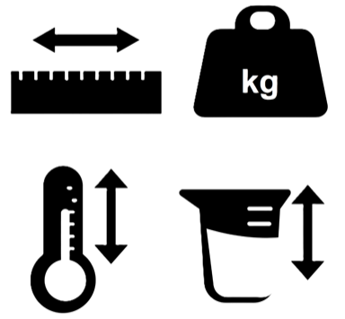
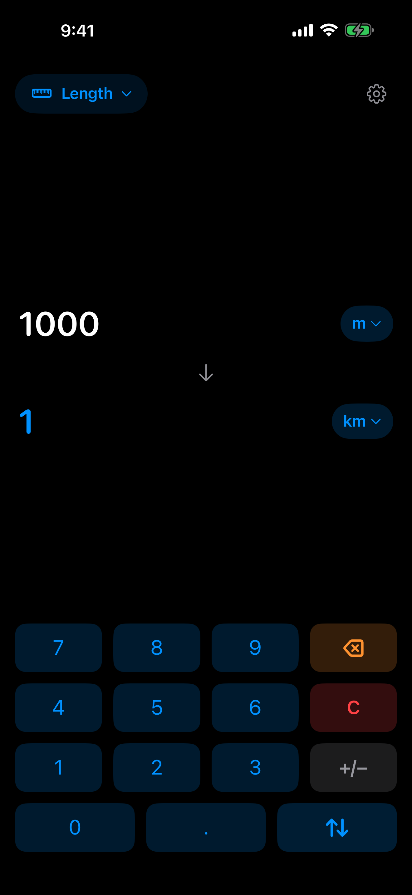
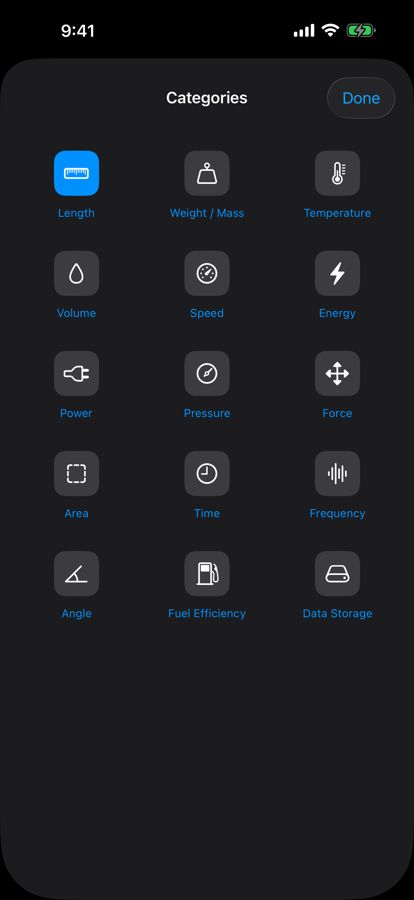
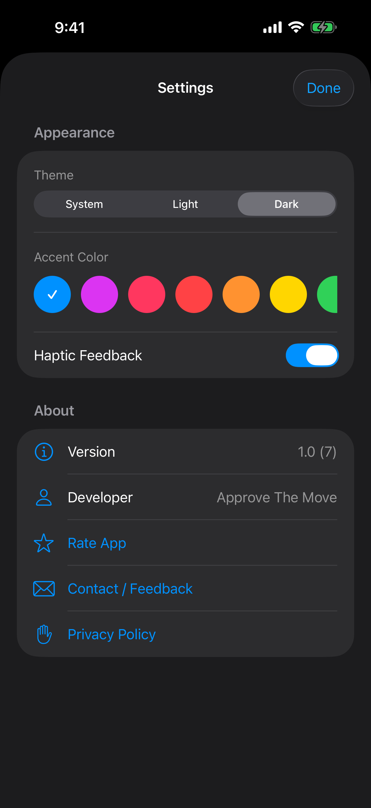
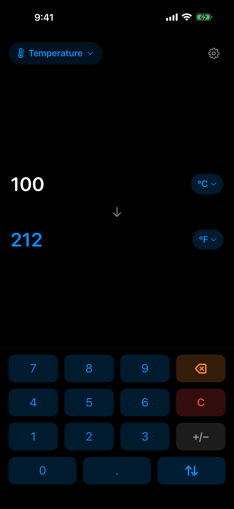
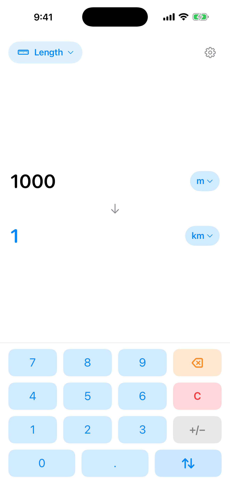

Convert between 14+ measurement categories instantly. Length, weight, temperature, volume, speed, data storage, and more.





Scroll to see more →
Meters, kilometers, miles, feet, inches, yards, nautical miles, and more.
Kilograms, grams, pounds, ounces, stones, metric tons.
Celsius, Fahrenheit, and Kelvin.
Liters, gallons, cups, tablespoons, milliliters, fluid ounces.
m/s, km/h, mph, knots.
Joules, calories, kilocalories, kilowatt-hours.
Watts, kilowatts, horsepower.
Pascals, bars, PSI, atmospheres.
Square meters, acres, hectares, square feet, square miles.
Seconds, minutes, hours, milliseconds, nanoseconds.
Bytes, KB, MB, GB, TB, PB.
Force, frequency, angle, fuel efficiency — all built on Apple's Foundation Measurement system for accuracy.
Pick a category — Tap the category name at the top to open the category picker.
Select units — Choose your source and target units (e.g., kilometers to miles).
Enter a value — Use the keypad to type a number. The conversion appears instantly.
Swap direction — Tap the swap arrow to reverse the conversion.
14+ categories covering length, weight, temperature, volume, speed, energy, power, pressure, force, area, time, frequency, angle, fuel efficiency, and data storage.
No. Unit Converter works entirely offline. It uses Apple's Foundation Measurement framework for accurate conversions, so no network request is ever made.
Yes. Completely free, no ads, no tracking, no paywall. It's a pure utility.
They use Apple's built-in Foundation Measurement API, which is the same library iOS uses for system-wide unit conversions. Precision matches industry standards.
Not currently. The app covers the standard Foundation Measurement units. If there's a unit you need that's missing, let me know on Instagram or LinkedIn.
Unit Converter performs all calculations on-device. No data is stored, collected, or transmitted. It's a pure utility with zero network activity.